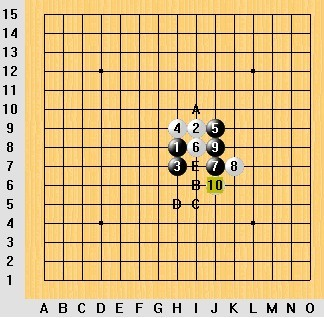
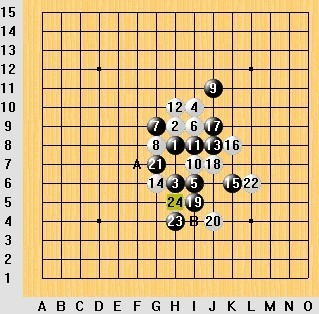
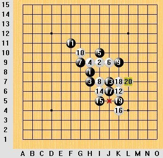

戴晓涵五子棋随感[连载]爱五子棋网独发
#1 戴晓涵五子棋随感[连载]爱五子棋网独发 作者：厦门小天 发表时间：2011-6-14 15:28:31
【注：给小天（戴晓涵）一块安静的空间，让他慢慢抒写自己的心得，我们静静的看，本贴谢绝回复，如有想法期待交流，可以在戴晓涵五子棋心得交流贴】
最近有些灵感但一直总结不出来 , 碰巧被邀讲课 , 顺手狠狠逼自己一把 , 思维催产 . 行文仓促 , 构思凌乱 , 望见谅 .
我始终相信用不同的角度分析五子棋会有不同的收获 , 哪怕这些角度诡异莫名,希望大家不局限于技术角度看待本文.
/*760*90，创建于2012-2-9*/ var cpro_id = 'u761865';
#2 Re:随感——连载——谢绝回复——意见建议发短信 作者：厦门小天 发表时间：2011-6-14 15:35:47
心理倾向是微妙的，可意会难言传，以下内容供参考，有兴趣者多体会。

选A者：白下边无法取胜，故抢先在上边建立优势；
选B者：自己做棋同时限制对方，攻中带控；
选C者：抢外围防御，放白棋攻等机会；
选D者：白没杀，保持先手暴力进攻；
选E者：初学者较多见。防守对方活2同时给自己做连接，他们认为这就是攻守兼备。
［此帖子已被 厦门小天 在 2011-6-14 15:40:36 编辑过］
［ 踵酃 于 2011-6-16 1:53:40 时花20金币送鲜花一朵］
#3 Re:随感——连载——谢绝回复——意见建议发短信 作者：厦门小天 发表时间：2011-6-14 16:53:37
隐于背后的胆怯
我曾与几个进攻型棋手交流，他们说他们防守的时候哪怕遇到很弱的对手，也会感到茫然，防得很保守，甚至总感觉自己防不住啦！因为他们总能看到很强的进攻点并担心对方看到，担心自己防不住。
我认为不少进攻型棋手都有类似的想法（包括我），这样的心态促使他们偏好持黑，偏好抢攻或控制，因为他们喜欢进攻的感觉并有意无意回避被攻击的恐惧。

上图黑棋可选强点 A ，但白棋 L7 后面一堆隐隐约约的手段加上对手的压力，促使黑棋选择看似更安全的 B 点。
这心思非常微妙，被攻击的恐惧感天然会被深藏，总担心被对方察觉引来更多攻势导致溃败。但实际上他们往往能防得很强，因为压力促使他们爆发出强大的计算以寻求安全感，所以想持续施压攻死他们很难，而他们输往往输在压力解除的瞬间。
当然也存在真正的进攻狂人，在他们心里从来没有恐惧只有厮杀中令人发抖的兴奋，他们可以接受失败，但却无法忍受平淡。

［此帖子已被 厦门小天 在 2011-6-14 16:54:58 编辑过］
［ 踵酃 于 2011-6-16 1:53:58 时花20金币送鲜花一朵］
#4 Re:戴晓涵五子棋随感[连载]爱五子棋网独发 作者：厦门小天 发表时间：2011-6-14 20:07:32
词汇透露的信息
插个题外话 :
我刚接触斗地主的时候 , 就知道 地主 , 农民 , 炸弹 , 三带一 这类初级的概念 ; 打到一定程度又接触传牌 , 记牌 , 博底 , 顶牌 , 信号 , 骗等抽象一些的概念 ; 再后来原本的词汇不够用啦 , 不少人不得不自创些词来表达更复杂的想法 .
#5 Re:戴晓涵五子棋随感[连载]爱五子棋网独发 作者：厦门小天 发表时间：2011-6-14 20:57:04
下棋的动作
成人大多有意无意掌握了通过对方行为来识别对方真实想法的技能，运用到五子棋也绝不是少数。这里我只是做个小总结，希望对年轻的新棋手有帮助。
写在前边的：
1，以下内容不是绝对的，甚至可能是错误的、偏失的，故仅供参考、引导，切勿盲信。
2，建议跟年纪较小的棋手练习，因为他们行为的掩饰最少，受其他因素影响较小。
下棋行为的含义：
1，最常见的，一般眼睛注视棋盘的地方，就是对方计算思考的地方。
2，对方思考一段时间后若出现嘴唇挤压的动作，表示对方计算受挫感到压力。
3，若对方双手抱头，头略收缩，这是感受到威胁天然的保护头部姿势；若配合紧盯棋盘+皱眉的表情，那么他的棋势恐怕岌岌可危，在苦苦寻求出路。
4，对方思考一段时间，若出现身子略前倾且头略微升高的动作，那么他可能算到不错的走法了。如果有高兴与兴奋的成分，那么可能算到必胜了，正在地毯中。
5，笑并不一定是找到好的走法，也可能是苦笑，摇头，感到无奈。是种自嘲的心态，表示对局面的不满意。
6，若对方抖脚或快速重复些无意义的小动作，说明他算得正兴奋，这时候打断人家很不礼貌。
7，你落子后若对方出现手摸头，同时头部下垂的动作，那么他可能感觉局面很痛苦，或者表示他的算盘打错了。
8，下棋时候身子扭向一边，脚乱晃或伸向外边，眼睛东张西望，说明对方没兴趣下棋，想走人啦。
9，摸后脑勺，可能是做错失的尴尬，也可能是遇到难题希望找到答案。
10，当你拿骗考对手时，若对方出现目光低垂，以及手挠头皮的动作，那么他应该是在回忆定式；若目光直接回到棋盘，那么可能回忆到点什么了，在验算；若目光先游离到其他地方再回来，那么估计是忘了所以下意识地把目光转移徒劳地寻找答案。
11,MM棋手发现对方必胜点或强点时，经常会出现一只手放在脖子根下边的动作，更大压力时甚至会把手放在嘴边。这样的信号基本等于她发现自己要输了…
12，注视棋盘一段时间后身体略后倾再回到原来的姿势，或者其他调整姿势的行为，可以认为是对先前思考内容的“清空”，这可能是他算完了再重新验算，或者放弃了某个选点再选新的选点等。
13，比赛时，深坐椅子，侧身，包括起身，喝水等，经常被认为是思考的疲惫所产生的试图远离棋盘的行为。
14，绝大多人有属于自己的专属动作，回忆下你熟悉的好友平时是不是常使用某个特定动作？下棋同样的道理，经常对弈的好友间，很容易读懂对方的动作所隐藏的含义。
小结：
1，比赛时认真算棋最常见的姿势是 身体略前倾注视棋盘；目光注视的地方，就是对方思考的地方。
2，对弈时大多数手碰头的动作被视为种安慰动作（如挠后脑摸脸摸额头等），以缓解比赛思考带来的小压力。当这种动作频率力度增大时，可以视为对方感到压力的增大。
3，下棋时候的动作其实非常丰富多彩，只是一般人都习惯把这些信息封闭起来，不以理会。平时有意的积累，可以发现五子棋另一个精彩。
［此帖子已被 厦门小天 在 2011-6-15 21:02:05 编辑过］
［ 梧桐风 于 2011-6-16 0:00:11 时花20金币送鲜花一朵］
［ 踵酃 于 2011-6-16 1:54:31 时花20金币送鲜花一朵］
#6 Re:戴晓涵五子棋随感[连载]爱五子棋网独发 作者：厦门小天 发表时间：2011-6-16 0:59:10
下棋的环境
几年前我看了关于行为心理学的书,里边有句话大意是:人生来可能有些不同,但环境会强化某些行为以及弱化某些行为,最终使人趋于一致. 当时我并不在乎这话准确性之类的问题,我在乎的是这对五子棋有什么启发.
记得有一次跟某高人交流,他说北京棋手擅长防御,上海棋手擅长进攻.因为北京吴昊曹冬防御力太强,没有人可以突破他的防御,因此以守待攻成为北京棋手的主流战术;而上海朱建锋俞满江进攻力太猛,没人拦得住,结果变得都偏好进攻.后来这批第一流棋手淡出后,北京棋手又带上了进攻性,上海棋手也变得偏防御.
这观点很可能有偏失,1来毕竟是别人说的,2来太多年记不清原话. 但透露出一点,下棋的环境很可能会影响棋的风格.
我的观点是:每个爱好者最初的想法多半是一致的,都会想如何提高技术,如何把棋下好,都会学习归纳总结棋理,都会思考追求五子棋技术的终点.随着时间的推移,技术也确实提高了,同时各自的风格也形成区分开来,因为环境在悄无声息地影响着每个人.
当我跟不同的风格的人对弈时,我常有"完全没想到对方这点""原来还可以这么下""下法很新颖"诸如此类的感觉.以前我只会简单的复盘,单纯看技术上最强应该怎么走,或者"马后炮"套理论来试图说服自己这样走合理或不合理.
其实换种包容的心态,会看到更多东西!
=======上图对应的爱五子棋谱代码如下，以便你拆解：========
h8h9j10i9g9i7i10g10k9i11i8j8k10l10k7k8l8j6j5m7g6h7g5g7f7h5f8e8d6e7e6f6d5c4d7d4e5g4f4c7b7i6j7e10
======================================================
选拔赛上对曹冬,这盘棋曹冬先冲了42,再走44.这个细节让我很在意,如果单纯从技术上看得话,这里冲不冲完全无区别,白棋在上边始终都有一堆连冲的手段.
那为什么要先冲4,这是个无意义的小细节吗?
你可以想象一下,白棋通过这个42是可以在上边有一堆连冲的.假设白棋可以连冲胜,那么白棋42是不是应该不冲,是不是应该隐藏自己的兴奋,装作一副痛苦的样子,甚至提和,麻痹对手. 如果你想明白了这点,再想为什么冲这个42,就像要提醒你他有连冲手段一样…实际上这里白棋有一套复杂的假VCF，最后黑刚好有自然反4.假如黑棋受42影响,没算清最后的自然反，以为有杀过去防守白棋.那这盘棋的结果可想而知.
这就是为什么42先冲的原因！
小结：
1，先在自己圈子里下一定阶段，有所成后再跟另一个圈子里的人交流，他山之石可以攻玉；
2，棋理会有重要的指导作用，但也不要太过于执迷棋理，包容的心态可以让我们看得更远。
［此帖子已被 厦门小天 在 2011-6-16 2:11:36 编辑过］
［ 隐藏菜系 于 2011-6-16 17:24:30 时花20金币送鲜花一朵］
#7 Re:戴晓涵五子棋随感[连载]爱五子棋网独发 作者：厦门小天 发表时间：None
关于修改规则的另一种思路（投稿）
在五子棋规则的世界 , 我认为被大家认同的规则“零件”有：交换，打点，连落 2 子，落子范围，棋盘大小，禁手，以及指定开局。
其中，规则核心关键部分由交换，打点，连下 2 子这三种要素构成；而落子范围是前者的强力辅助，它具有保证信息对称，开局美观，增加变化等功能；除此外与开局规则部分不直接相关的是禁手与棋盘大小，它们具限制先手优势等其它方面的作用；最后指定开局是比较特殊的构成，它有作用但并非必要。（注：连下 2 子源于 SAKATA 规则）
我认为过去的修改规则的方式，就是尝试将三种要素进行各种各样的组合，结合恰当的落子范围，进而组合出兼顾多方面的新规则。例如山口规则， 5 次交换规则等等规则。
by:web版  IP：
已记录
IP：
已记录
#8 Re:戴晓涵五子棋随感[连载]爱五子棋网独发 作者：厦门小天 发表时间：2011-6-16 20:47:16
前文忘了说，插个小提示：少年组比赛，有机会去观察小朋友的比赛姿势动作，结合盘面局势… 你懂的…
#9 Re:戴晓涵五子棋随感[连载]爱五子棋网独发 作者：厦门小天 发表时间：2011-6-22 11:46:38
=======上图对应的爱五子棋谱代码如下，以便你拆解：========
h8h9j10i9g9i7i10h10j8j7i8g8h7j9l8k8l9l7k7
======================================================
上图昨晚下的棋，当时一小朋友问我些问题。比如“该局面右边基本属于交换区 左边属于作战区”“在该局面下最强的点应该在XX”之类。我认为年轻的棋手在技术提高阶段，倾向于得到确定性的答案是可以理解的，这些问题的认识对大局观、局面的理解确实有帮助。
我的经验是，我也曾“发现”各种五子棋的“规律”，并奉之为真理，技术也确实得到提高。但突然有一天，我发觉自己被束缚在自己“发现”的条条框框里，技术止步不前，或许这就是所谓的瓶颈。我突破瓶颈的方式，就是放弃先前对五子棋的认知，仅保留最根本规律的认识，保持一个开放包容的心态，不再轻易给自己设置各种看似合理的条条框框。
观点：不否认对五子棋各种规律的学习，这在技术提高阶段确实有帮助。此经验作为参考，希望不要思维僵化。
我认为：妙手的意思是这手棋不容易想到，不容易想到的原因以其说它位置诡异，不如说我们先入为主地过滤掉它。
=======上图对应的爱五子棋谱代码如下，以便你拆解：========
h8h9i9i8j6
======================================================
花月最简单的必胜5.
=======上图对应的爱五子棋谱代码如下，以便你拆解：========
h8i9i6i10g9h10f10i7g11h11g12g10h12e9i12f12i11h13k10k12k9l8k8k7j7j8l6h5l9m10j12
======================================================
很容易被过滤掉的31，但它是必胜点，所以被称为绝妙手。除此外，17过去流行j11，因为它看上去比i11好。
=======上图对应的爱五子棋谱代码如下，以便你拆解：========
h8h9h7h6j7g8i7g7g9j6i5i8i6l7i10g10j10h10f11f10e10h11i12h13h12k11j11j9d10
======================================================
最简单胜的29。
［此帖子已被 厦门小天 在 2011-6-22 12:00:15 编辑过］
［ 隐藏菜系 于 2011-6-22 14:31:35 时花20金币送鲜花一朵］
［ 死劲哭 于 2011-6-23 0:08:11 时花20金币送鲜花一朵］
［ 茗弈小刀 于 2011-6-29 11:10:22 时奖励此帖[金币加 100 威望加1］
［ 五步之道 于 2012-4-4 14:02:46 时花20金币送鲜花一朵］